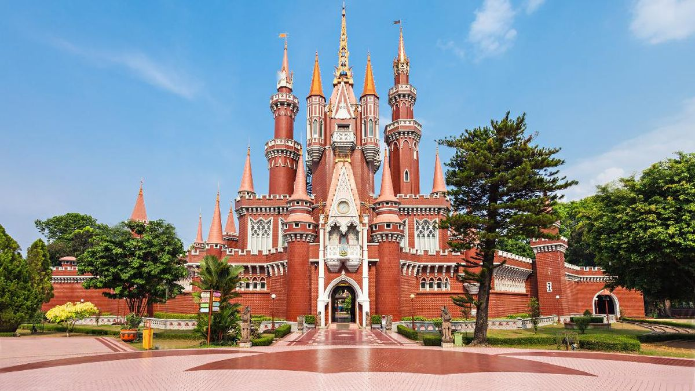
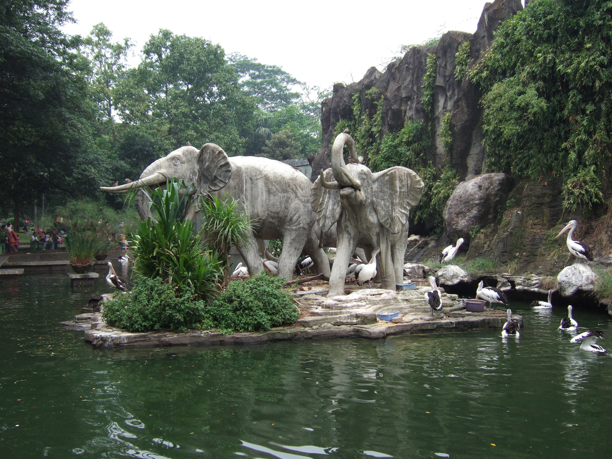

Taman Mini Indonesia Indah (TMII)
sumber: cnnindonesia.com
Sebuah taman rekreasi kebudayaan yang menampilkan miniatur kepulauan Indonesia, anjungan daerah dengan rumah adat, museum, dan berbagai wahana edukasi.
📍 Jalan Taman Mini Raya, Cipayung, Kota Jakarta Timur, DKI Jakarta
🕒 08.00 - 17.00 WIBMonumen Nasional (Monas)
sumber: smartcity.jakarta.go.id
Monumen setinggi 132 meter yang merupakan simbol perjuangan kemerdekaan Indonesia. pengunjung dapat naik ke puncak tugu untuk menikmati pemandangan kota Jakarta dari atas.
📍 Jalan Medan Merdeka, Gambir, Kota Jakarta Pusat, DKI Jakarta
🕒 Setiap Hari (Selasa-Minggu): 06.00 - 22.00 WIB. Tugu & Museum: 08.00 - 18.00 WIB (loket tutup 17.00 WIB). Senin tutup.Ragunan Zoo (Taman Margasatwa Ragunan)
sumber: id.wikipedia.org
Kebun binatang tertua di Indonesia, tempat konservasi satwa dengan luas mencapai 147 hektar, menampung lebih dari 2.000 ekor satwa dari berbagai spesies.
📍 Jalan Harsono RM No. 1, Ragunan, Pasar Minggu, Kota Jakarta Selatan, DKI Jakarta
🕒 (Selasa-Minggu): 10.00 - 15.00 WIB
Info Terbaru Jakarta:
Wisata dan Kuliner
Contact Us!
+62-123-4567-890 email@adress.com
Wisata dan Kuliner
Contact Us!
+62-123-4567-890 email@adress.com